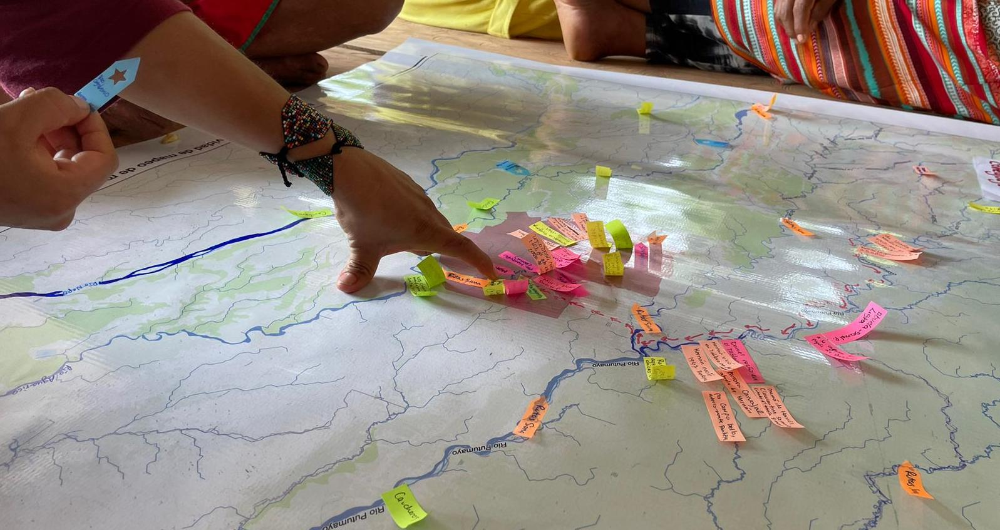

research
My research sits at the intersection of digital geographies and feminist political ecology. I explore community-based mapping methodologies with a focus on data sovereignty, oral histories, and the development of culturally responsive digital archives.
I am particularly interested in how mapping and geo-storytelling can support Indigenous self-determination and governance in Amazonia and beyond.
I work with a variety of mapping tools and software, including, but not limited to: pen, paper, stories, sound, QGIS, Leaflet, MapBox, ArcGIS, and Google Earth Engine.
